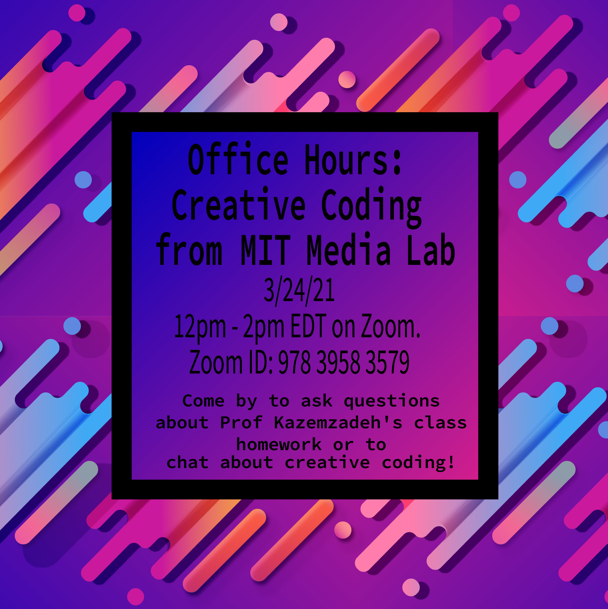
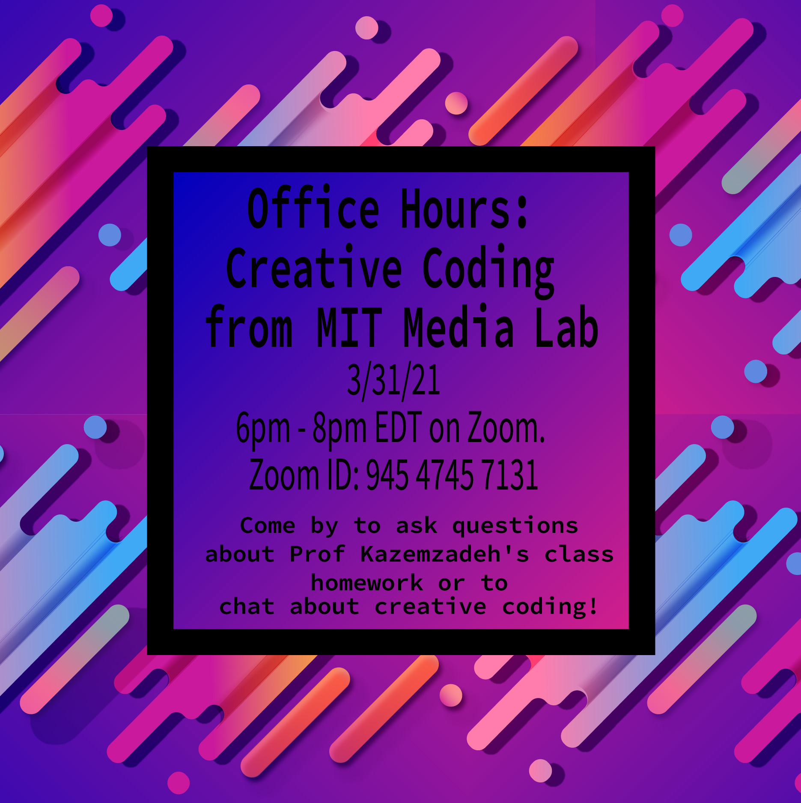
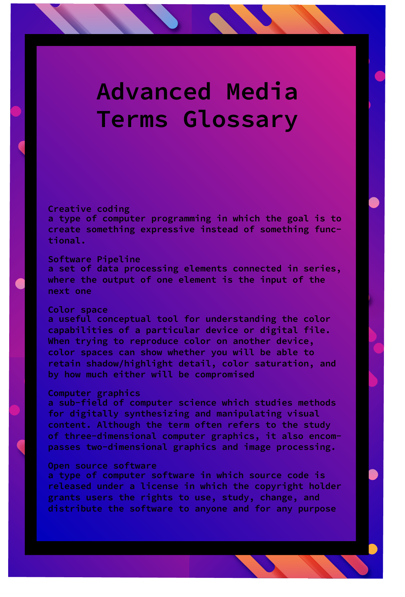
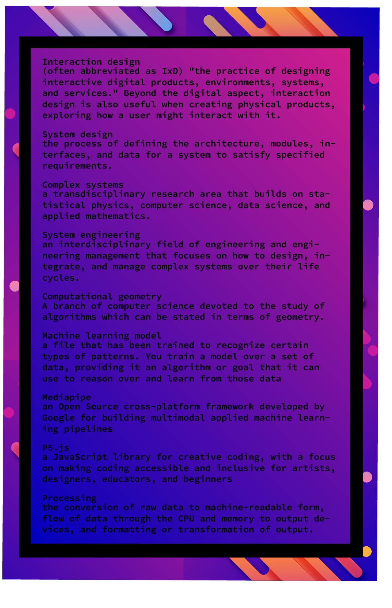
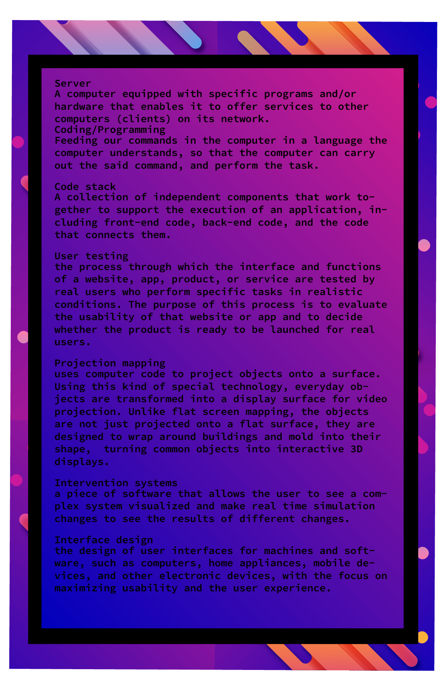
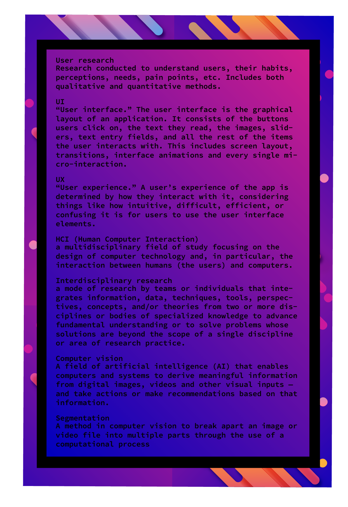

Here is code, info, etc for "Creative Coding: Weather, Vision, and Sketching" module of Web Design at Gallaudet University, as taught by Nina Lutz and Prof Max Kazemzadeh, Spring 2021. With assistance from Skylar Kolisko.
I've been doing creative and/or visual coding + math stuffs since 2015 when I started working with Ira Winder in City Science at the MIT Media Lab. I have primarily done Processing and p5.js.
I post (almost) daily sketches made wtih p5.js on my Twitter.
This is some documentation for 2 sessions at Gallaudet that I am teaching as part of Prof Max Kazemzadeh's Web Design course.
You can view the Github here and you can email me at nlutz@mit.edu if you have more questions!
We will be hosting office hours on 3/24 and 3/31 for these sessions or for any Gallaudet students that want to come by and ask questions about resaerch in HCI, creative coding, or careers in this space. Info is below!
 3/24 12pm-2pm Zoom ID: 978 3958 3579
3/31 6pm-8pm Zoom ID: 945 4745 7131
Recommended pre-reading for this session: A Year (2020) of (almost) Daily (code) Sketches
This session will cover building weather web apps by retrieving data via an API call into p5.js sketches and visualizing data using object oriented programming and computer graphics. Through this, we will also go more in the process of sketching and iteration of design.
More documentation and notes incoming!
This session will cover how recording and streaming video on websites for both desktops and mobile devices works. As well as covering advances in computer vision on the web, such as developments with the Mediapipe release from Google and Tensorflow. We will also go over the process of user research for websites.
More documentation and notes incoming!
Every p5.js sketch has a setup() and draw() loop. Setup runs once. Draw runs consistently and just keeps looping. If you don't want to have a looping drawing, just leave your draw() loop empty and put all your code in setup()
In general, once you have that structure, you can kind of do whatever you want. The key things to remember in general are:
background(255, 50) this makes a semi transparent background that gives your code a "ghost" appearance. 255 would be a white background like Example 1.
noise() function so you don't have to write matrices to get noise! Reference here.
tau (2*pi). Example 5 shows an example of tau being used to create weird, noisy curves. Example 4 shows some cool sin/cos curves.
map(value, start1, stop1, start2, stop2) is a function that allows you to linearly interpolate between value ranges. Used for color + coordinates. lerpColor(startColor, endColor, percent) lets you do this a bit easier for colors.
createVector() a lot of my sketches are vector based and what's great about creating a vector is you can do vector math like adding forces and velocities. Reference here.
curveVertex() allows you to build more complex geometries overall. Refence here. Example 4 also has an example of this.
blendMode() is a super easy way to start playing with color and pixel blending without writing any code. Reference for all the modes is here . I personally love using EXCLUSION to get a glitchy look.
All of the code of the examples on this site is in this repo. More documentation will be added soon.
The p5.js website really is the best place to get help/documentation. In particular they have a learn page with more code explanations and also a documentation/reference page for quick lookups and an examples page.
There are a lot of amazing people in the space that do tutorials and content for this work and code alongs and have lots of tutorials. Daniel Shiffman is a great person to look at for these.
There is also just an amazing community around this space, which I encourage people to look into. There are creative coding clubs and scenes all over the world, and a lot of them are welcoming to everyone and newcomers!
We have created glossaries of relevant terms here, including some in handout forms.
   